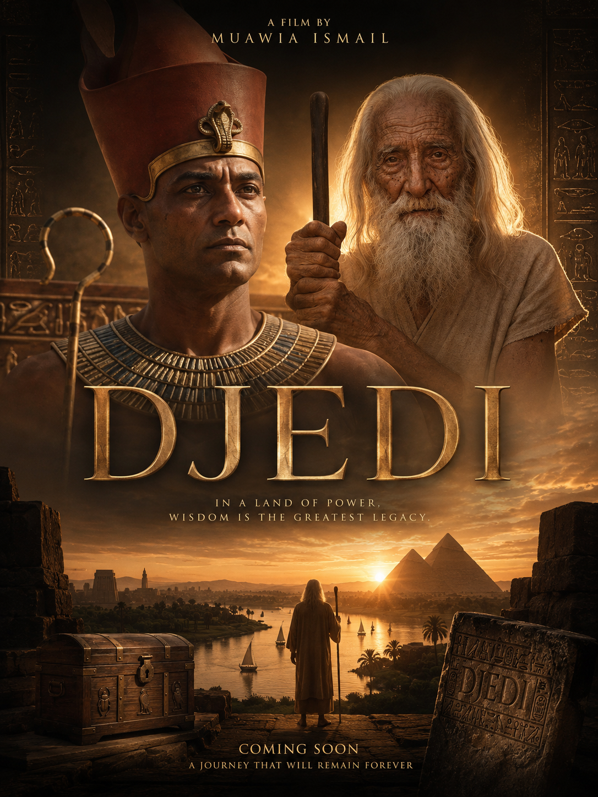
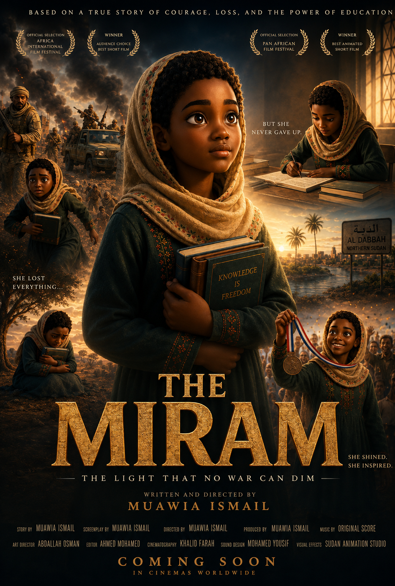
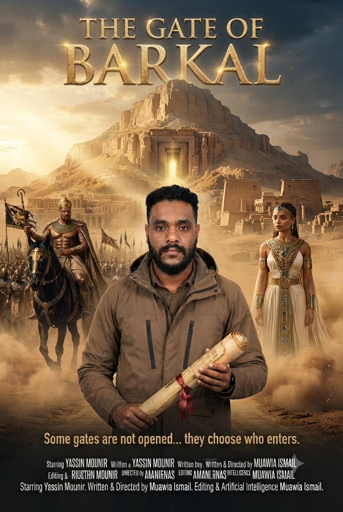
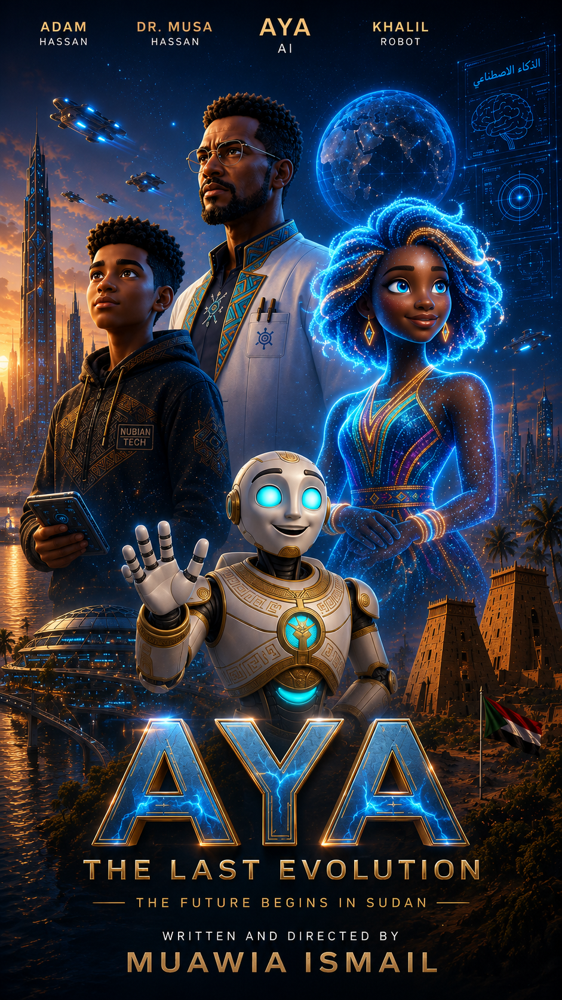

Muawia Ismail Ibrahim is a Sudanese filmmaker and AI prompt engineering specialist whose work explores ancient Egyptian and Kushite history, human-rights stories, animation, and the use of generative artificial intelligence in filmmaking.

Drawn from a tale recorded in the Westcar Papyrus, DJEDI is a 30-minute-and-12-second historical narrative film about Ancient Egypt, created primarily using generative AI by Sudanese filmmaker Muawia Ismail Ibrahim. A world-record application has been submitted to RecordSetter under the proposed category 'Longest Narrative Film About Ancient Egypt Created Primarily Using Generative AI.' The application is currently under review.

A humanitarian story built for platforms that center human-rights cinema — part of Muawia Ismail Ibrahim's wider effort to use film as a way to carry stories across borders, languages, and audiences.

A historical project centered on King Taharqa and Jebel Barkal, one of the great sites of Kushite civilization — using AI to help build scenes, characters, and environments for a chapter of Sudanese history rarely told on screen.

AYA is an animated film created using generative artificial intelligence by Sudanese filmmaker Muawia Ismail Ibrahim. The project explores storytelling through animation and emerging AI filmmaking technologies.
Muawia Ismail Ibrahim is a Sudanese filmmaker and AI prompt engineering specialist and the creator of DJEDI and AYA . His work explores the intersection of ancient history, Sudanese and Nile Valley heritage, animation, filmmaking, and emerging artificial intelligence technologies.
He represented Sudan's country file at Youth Connect Africa 24 in Rwanda, as part of a Sudanese delegation led by the then-Minister of Youth and Sports.
Ismail sees AI as an opening for young people well beyond technical fields — in film, media, content, education, and entrepreneurship — and works to connect youth empowerment with technology and creative production.
His film work sits at the meeting point of three long-standing interests: Sudanese and African youth organizing, ancient Nile Valley history, and the practical use of generative AI in storytelling.